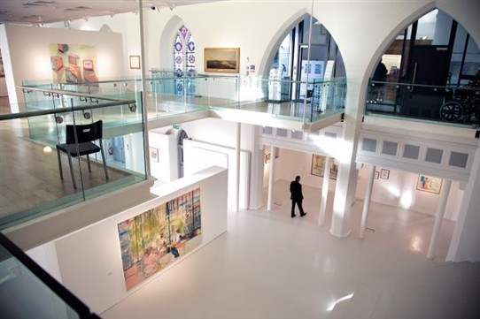

Highlanes Gallery
The Highlanes Gallery is sited in the former Franciscan Church and part of the Friary; known locally as the ‘High Lane Church'. The Franciscans gifted the property to the people of Drogheda when they ended their 760 year association with the town in 2000. The buildings date from the early 19th century, though elements date back to earlier times and include the former Franciscan burial crypts.
The main exhibition spaces are open plan and include the old Church level and a new floor at the height of the old balcony and as such, the character of the building is not lost. The Gallery was developed to house the Drogheda Municipal Art Collection which dates from the middle of the 18th century and includes two magnificent paintings of Drogheda, dated 1752, attributed to Gabriele Ricciardelli. Showing the town, looking up river and down the town Walls & Gates are clearly visible.
Also housed in Highlanes Gallery are the Mace and Sword of State presented by King William III after the Battle of the Boyne.
Details
Address: Laurence Street, Drogheda, Co. Louth
Email: info@highlanes.ie
Phone: +353 41 9803311
Website: http://www.highlanes.ie